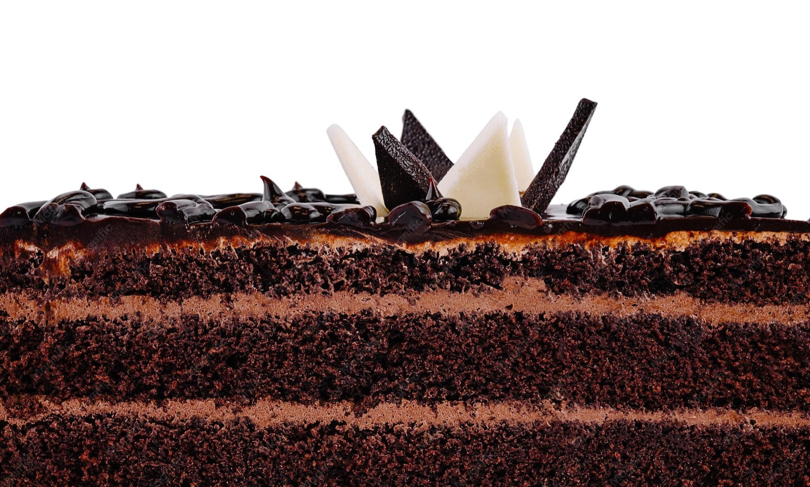
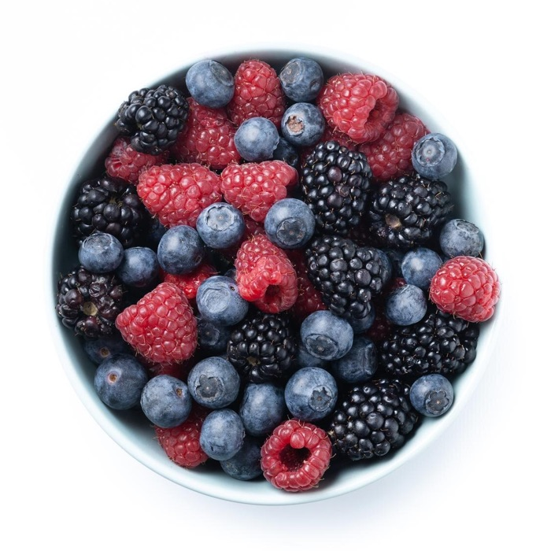
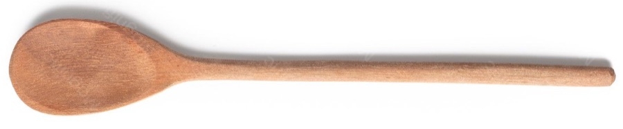

Домашняя кондитерская @vvladsaa реализует индивидуальный подход к каждому заказу. Мы обращаем внимание на то, где и когда будет подан десерт, кому и по какому поводу.
Именно поэтому на 100 грамм нам удаётся вместить
больше смысла, любви и заботы, чем калорий.

Кондитерская берётся за десерты любой сложности. От небольшого чизкейка до свадебных тортов. Наш опыт позволяет создать десерт точно ко времени заказа — карамель всегда будет густой, брауни сохранит текстуру, а ягоды даже в зиму дадут вам прочувствовать вкус лета.
Для вопросов и предложений, напишите напрямую на telegram аккаунт @vvladsaa
Найти работы и жизнь автора можно по ссылке
